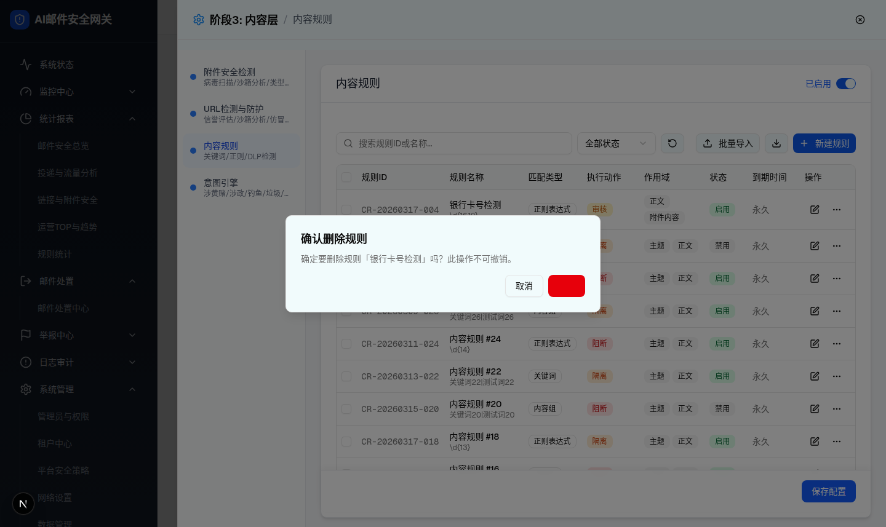
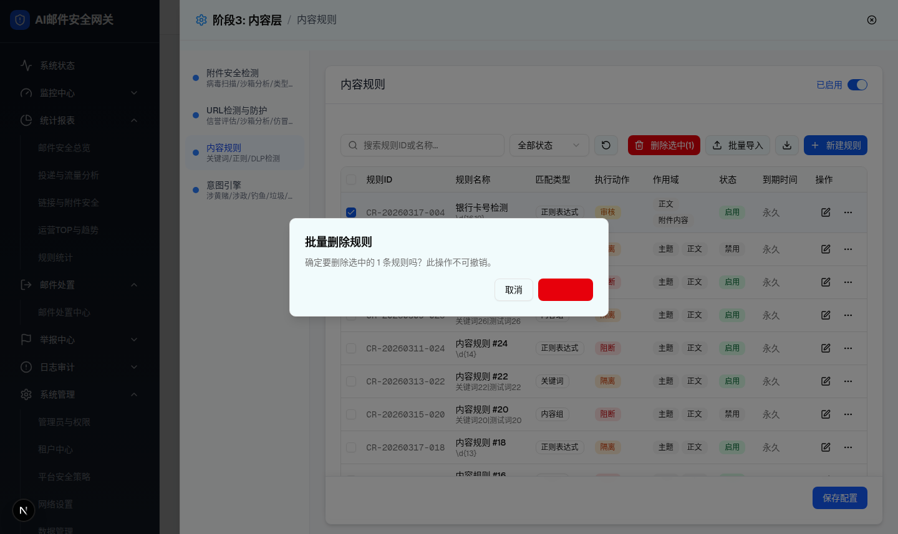
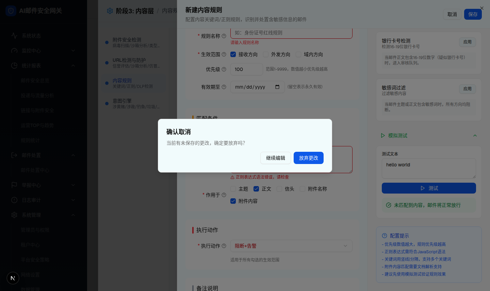

| 所属组件 | 2.2 内容规则列表（删除/批量删除/更多菜单） + 2.3 规则编辑抽屉（取消确认） |
| 触发路径 | ① 行操作列 ⋯ → DropdownMenu → 删除 → 删除确认；② 勾选行 → 「删除选中(N)」→ 批量删除确认；③ 编辑抽屉有未保存更改时点「取消」或关闭 Sheet → 取消确认 |
| 组件形态 | 三个均为 Radix AlertDialog（[role=alertdialog]，居中弹窗 + 半透明遮罩），节点数实测均为 7（标题 h2 + 描述 p + 两按钮）；更多菜单为 [role=menu] DropdownMenu（节点数 14） |
| 截图 | row-more-menu.png / delete-confirm-dialog.png / batch-delete-dialog.png / cancel-confirm-dialog.png |



| 对话框 | 标题 | 描述（实测） | 按钮 | 确认后行为 |
|---|---|---|---|---|
| 删除确认 | 确认删除规则 | 确定要删除规则「{规则名}」吗？此操作不可撤销。 | 取消（outline）/ 删除（destructive 红） | 从列表移除该规则并同步清除选中集合 |
| 批量删除确认 | 批量删除规则 | 确定要删除选中的 {N} 条规则吗？此操作不可撤销。 | 取消 / 确认删除（destructive 红） | 移除所有选中规则并清空选中集合 |
| 取消确认 | 确认取消 | 当前有未保存的更改，确定要放弃吗？ | 继续编辑（AlertDialogCancel）/ 放弃更改（AlertDialogAction） | 放弃更改关闭编辑抽屉回到列表（实测关闭）；继续编辑留在抽屉。Sheet 遮罩/ESC 关闭同样被 hasChanges 拦截进入本对话框 |
| 比对项 | demo 实际 DOM | 提取的 HTML 预览 | 是否一致 |
|---|---|---|---|
| 对话框根节点 | [role=alertdialog] data-state=open，居中 fixed，nodeCount 7：header(h2+p) + footer(两 button) | .dialog 居中弹窗，h3+p+actions 两按钮 | 一致（结构等价） |
| 删除确认文案 | h2「确认删除规则」，p「确定要删除规则「银行卡号检测」吗？此操作不可撤销。」 | 同文案（规则名示例相同） | 一致 |
| 批量删除文案 | h2「批量删除规则」，p「确定要删除选中的 1 条规则吗？此操作不可撤销。」 | 同文案（N 联动演示） | 一致 |
| 取消确认文案 | h2「确认取消」，p「当前有未保存的更改，确定要放弃吗？」，按钮「继续编辑 / 放弃更改」 | 同文案同按钮 | 一致 |
| 危险按钮样式 | 删除/确认删除 class 含 bg-destructive | button-red 红底 | 一致 |
| 更多菜单 | [role=menu] nodeCount 14：menuitem 禁用 / menuitem(Copy图标)复制规则 / separator / menuitem(红)删除 | menu-pop 同三项 + 分隔线 + 红色删除 | 一致 |
| 遮罩 | Radix Overlay bg-black/50 | .overlay rgba(0,0,0,.5) | 一致 |
确定要删除规则「银行卡号检测」吗？此操作不可撤销。
确定要删除选中的 1 条规则吗？此操作不可撤销。
当前有未保存的更改，确定要放弃吗？